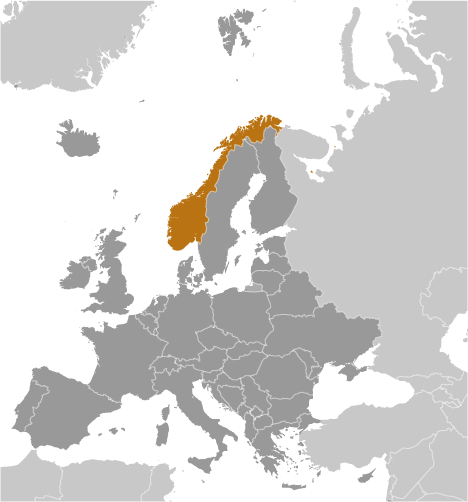
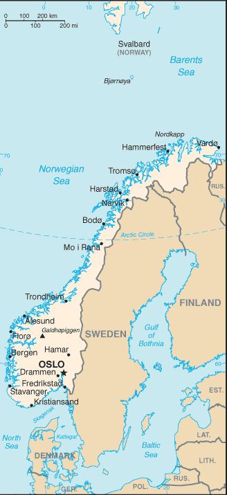
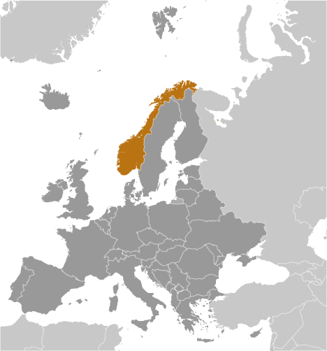
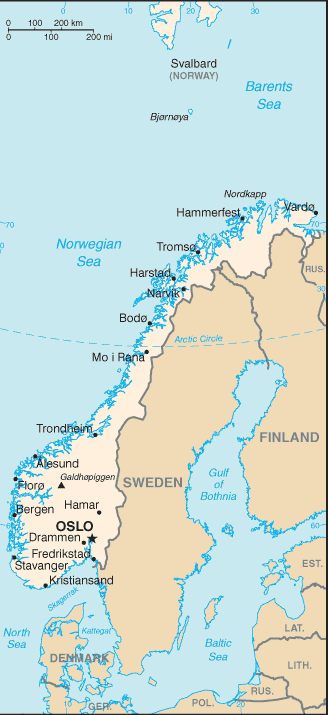

-
Introduction :: Norway
-
Background:Two centuries of Viking raids into Europe tapered off following the adoption of Christianity by King Olav TRYGGVASON in 994; conversion of the Norwegian kingdom occurred over the next several decades. In 1397, Norway was absorbed into a union with Denmark that lasted more than four centuries. In 1814, Norwegians resisted the cession of their country to Sweden and adopted a new constitution. Sweden then invaded Norway but agreed to let Norway keep its constitution in return for accepting the union under a Swedish king. Rising nationalism throughout the 19th century led to a 1905 referendum granting Norway independence. Although Norway remained neutral in World War I, it suffered heavy losses to its shipping. Norway proclaimed its neutrality at the outset of World War II, but was nonetheless occupied for five years by Nazi Germany (1940-45). In 1949, Norway abandoned neutrality and became a member of NATO. Discovery of oil and gas in adjacent waters in the late 1960s boosted Norway's economic fortunes. In referenda held in 1972 and 1994, Norway rejected joining the EU. Key domestic issues include immigration and integration of ethnic minorities, maintaining the country's extensive social safety net with an aging population, and preserving economic competitiveness.
-
Geography :: Norway
-
Location:Northern Europe, bordering the North Sea and the North Atlantic Ocean, west of SwedenGeographic coordinates:62 00 N, 10 00 EMap references:EuropeArea:total: 323,802 sq kmland: 304,282 sq kmwater: 19,520 sq kmcountry comparison to the world: 69Area - comparative:slightly larger than twice the size of Georgia; slightly larger than New MexicoLand boundaries:total: 2,566 kmborder countries (3): Finland 709 km, Sweden 1666 km, Russia 191 kmCoastline:25,148 km (includes mainland 2,650 km, as well as long fjords, numerous small islands, and minor indentations 22,498 km; length of island coastlines 58,133 km)Maritime claims:territorial sea: 12 nmexclusive economic zone: 200 nmcontiguous zone: 10 nmcontinental shelf: 200 nmClimate:temperate along coast, modified by North Atlantic Current; colder interior with increased precipitation and colder summers; rainy year-round on west coastTerrain:glaciated; mostly high plateaus and rugged mountains broken by fertile valleys; small, scattered plains; coastline deeply indented by fjords; arctic tundra in northElevation:mean elevation: 460 melevation extremes: 0 m lowest point: Norwegian Sea2469 highest point: GaldhopiggenNatural resources:petroleum, natural gas, iron ore, copper, lead, zinc, titanium, pyrites, nickel, fish, timber, hydropowerLand use:agricultural land: 2.7% (2011 est.)arable land: 2.2% (2011 est.) / permanent crops: 0% (2011 est.) / permanent pasture: 0.5% (2011 est.)forest: 27.8% (2011 est.)other: 69.5% (2011 est.)Irrigated land:900 sq km (2012)Population distribution:most Norweigans live in the south where the climate is milder and there is better connectivity to mainland Europe; population clusters are found all along the North Sea coast in the southwest, and Skaggerak in the southeast; the interior areas of the north remain sparsely populatedNatural hazards:
rockslides, avalanches
volcanism: Beerenberg (2,227 m) on Jan Mayen Island in the Norwegian Sea is the country's only active volcano
Environment - current issues:water pollution; acid rain damaging forests and adversely affecting lakes, threatening fish stocks; air pollution from vehicle emissionsEnvironment - international agreements:party to: Air Pollution, Air Pollution-Nitrogen Oxides, Air Pollution-Persistent Organic Pollutants, Air Pollution-Sulfur 85, Air Pollution-Sulfur 94, Air Pollution-Volatile Organic Compounds, Antarctic-Environmental Protocol, Antarctic-Marine Living Resources, Antarctic Seals, Antarctic Treaty, Biodiversity, Climate Change, Climate Change-Kyoto Protocol, Desertification, Endangered Species, Environmental Modification, Hazardous Wastes, Law of the Sea, Marine Dumping, Ozone Layer Protection, Ship Pollution, Tropical Timber 83, Tropical Timber 94, Wetlands, Whalingsigned, but not ratified: none of the selected agreementsGeography - note:about two-thirds mountains; some 50,000 islands off its much-indented coastline; strategic location adjacent to sea lanes and air routes in North Atlantic; one of the most rugged and longest coastlines in the world -
People and Society :: Norway
-
Population:5,372,191 (July 2018 est.)country comparison to the world: 120Nationality:noun: Norwegian(s)adjective: NorwegianEthnic groups:Norwegian 83.2% (includes about 60,000 Sami), other European 8.3%, other 8.5% (2017 est.)Languages:Bokmal Norwegian (official), Nynorsk Norwegian (official), small Sami- and Finnish-speaking minorities
note: Sami has three dialects: Lule, North Sami, and South Sami; Sami is an official language in nine municipalities in Norway's three northernmost counties: Finnmark, Nordland, and Troms
Religions:Church of Norway (Evangelical Lutheran - official) 71.5%, Roman Catholic 2.8%, other Christian 3.9%, Muslim 2.8%, other 2%, unspecified 7.5% (2016 est.)Age structure:0-14 years: 17.99% (male 495,403 /female 471,014)15-24 years: 12.37% (male 340,672 /female 324,088)25-54 years: 40.98% (male 1,136,373 /female 1,065,138)55-64 years: 11.72% (male 318,898 /female 310,668)65 years and over: 16.94% (male 420,178 /female 489,759) (2018 est.)population pyramid: The World Factbook Field Image ModalEurope :: Norway Print
The World Factbook Field Image ModalEurope :: Norway Print Image DescriptionThis is the population pyramid for Norway. A population pyramid illustrates the age and sex structure of a country's population and may provide insights about political and social stability, as well as economic development. The population is distributed along the horizontal axis, with males shown on the left and females on the right. The male and female populations are broken down into 5-year age groups represented as horizontal bars along the vertical axis, with the youngest age groups at the bottom and the oldest at the top. The shape of the population pyramid gradually evolves over time based on fertility, mortality, and international migration trends.
Image DescriptionThis is the population pyramid for Norway. A population pyramid illustrates the age and sex structure of a country's population and may provide insights about political and social stability, as well as economic development. The population is distributed along the horizontal axis, with males shown on the left and females on the right. The male and female populations are broken down into 5-year age groups represented as horizontal bars along the vertical axis, with the youngest age groups at the bottom and the oldest at the top. The shape of the population pyramid gradually evolves over time based on fertility, mortality, and international migration trends.
For additional information, please see the entry for Population pyramid on the Definitions and Notes page under the References tab.Dependency ratios:total dependency ratio: 52.1 (2015 est.)youth dependency ratio: 27.3 (2015 est.)elderly dependency ratio: 24.8 (2015 est.)potential support ratio: 4 (2015 est.)note: data include Svalbard and Jan Mayen Islands
Median age:total: 39.3 yearsmale: 38.6 yearsfemale: 40 years (2018 est.)country comparison to the world: 55Population growth rate:0.94% (2018 est.)country comparison to the world: 117Birth rate:12.2 births/1,000 population (2018 est.)country comparison to the world: 160Death rate:8 deaths/1,000 population (2018 est.)country comparison to the world: 90Net migration rate:5.9 migrant(s)/1,000 population (2017 est.)country comparison to the world: 17Population distribution:most Norweigans live in the south where the climate is milder and there is better connectivity to mainland Europe; population clusters are found all along the North Sea coast in the southwest, and Skaggerak in the southeast; the interior areas of the north remain sparsely populatedUrbanization:urban population: 82.2% of total population (2018)rate of urbanization: 1.4% annual rate of change (2015-20 est.)note: data include Svalbard and Jan Mayen Islands
Major urban areas - population:1.012 million OSLO (capital) (2018)Sex ratio:at birth: 1.05 male(s)/female (2017 est.)0-14 years: 1.05 male(s)/female (2017 est.)15-24 years: 1.05 male(s)/female (2017 est.)25-54 years: 1.06 male(s)/female (2017 est.)55-64 years: 1.02 male(s)/female (2017 est.)65 years and over: 0.84 male(s)/female (2017 est.)total population: 1.02 male(s)/female (2017 est.)Mother's mean age at first birth:28.9 years (2015 est.)note: data is calculated based on actual age at first births
Maternal mortality rate:5 deaths/100,000 live births (2015 est.)country comparison to the world: 172Infant mortality rate:total: 2.5 deaths/1,000 live births (2018 est.)male: 2.8 deaths/1,000 live births (2018 est.)female: 2.2 deaths/1,000 live births (2018 est.)country comparison to the world: 219Life expectancy at birth:total population: 82 years (2018 est.)male: 79.9 years (2018 est.)female: 84.1 years (2018 est.)country comparison to the world: 22Total fertility rate:1.85 children born/woman (2018 est.)country comparison to the world: 143Health expenditures:9.7% of GDP (2014)country comparison to the world: 29Physicians density:4.39 physicians/1,000 population (2015)Hospital bed density:3.8 beds/1,000 population (2015)Drinking water source:improved: urban: 100% of populationrural: 100% of populationtotal: 100% of populationunimproved: urban: 0% of populationrural: 0% of populationtotal: 0% of population (2015 est.)Sanitation facility access:improved: urban: 98% of population (2015 est.)rural: 98.3% of population (2015 est.)total: 98.1% of population (2015 est.)unimproved: urban: 2% of population (2015 est.)rural: 1.7% of population (2015 est.)total: 1.9% of population (2015 est.)HIV/AIDS - adult prevalence rate:0.1% (2017 est.)country comparison to the world: 115HIV/AIDS - people living with HIV/AIDS:5,100 (2017 est.)country comparison to the world: 116HIV/AIDS - deaths:<100 (2017 est.)Obesity - adult prevalence rate:23.1% (2016)country comparison to the world: 68Education expenditures:7.7% of GDP (2014)country comparison to the world: 10School life expectancy (primary to tertiary education):total: 18 years (2015)male: 17 years (2015)female: 18 years (2015)Unemployment, youth ages 15-24:total: 10.4% (2017 est.)male: 11.7% (2017 est.)female: 9% (2017 est.)country comparison to the world: 125 -
Government :: Norway
-
Country name:conventional long form: Kingdom of Norwayconventional short form: Norwaylocal long form: Kongeriket Norgelocal short form: Norgeetymology: derives from the Old Norse words "nordr" and "vegr" meaning "northern way" and refers to the long coastline of western NorwayGovernment type:parliamentary constitutional monarchyCapital:name: Oslogeographic coordinates: 59 55 N, 10 45 Etime difference: UTC+1 (6 hours ahead of Washington, DC, during Standard Time)daylight saving time: +1hr, begins last Sunday in March; ends last Sunday in OctoberAdministrative divisions:18 counties (fylker, singular - fylke); Akershus, Aust-Agder, Buskerud, Finnmark, Hedmark, Hordaland, More og Romsdal, Nordland, Oppland, Oslo, Ostfold, Rogaland, Sogn og Fjordane, Telemark, Troms, Trondelag, Vest-Agder, VestfoldDependent areas:Bouvet Island, Jan Mayen, SvalbardIndependence:7 June 1905 (declared the union with Sweden dissolved); 26 October 1905 (Sweden agreed to the repeal of the union); notable earlier dates: ca. 872 (traditional unification of petty Norwegian kingdoms by HARALD Fairhair); 1397 (Kalmar Union of Denmark, Norway, and Sweden); 1524 (Denmark-Norway); 17 May 1814 (Norwegian constitution adopted); 4 November 1814 (Sweden-Norway)National holiday:Constitution Day, 17 May (1814)Constitution:history: drafted spring 1814, adopted 16 May 1814, signed by Constituent Assembly 17 May 1814amendments: proposals submitted by members of Parliament or by the government within the first three years of Parliament's four-year term; passage requires two-thirds majority vote of a two-thirds quorum in the next elected Parliament; amended over 400 times, last in 2015 (2016)Legal system:mixed legal system of civil, common, and customary law; Supreme Court can advise on legislative actsInternational law organization participation:accepts compulsory ICJ jurisdiction with reservations; accepts ICCt jurisdictionCitizenship:citizenship by birth: nocitizenship by descent only: at least one parent must be a citizen of Norwaydual citizenship recognized: noresidency requirement for naturalization: 7 yearsSuffrage:18 years of age; universalJudicial branch:highest courts: Supreme Court or Hoyesterett (consists of the chief justice and 18 associate justices)judge selection and term of office: justices appointed by the monarch (King in Council) upon the recommendation of the Judicial Appointments Board; justices can serve until mandatory retirement at age 70subordinate courts: Courts of Appeal or Lagmensrett; regional and district courts; Conciliation Boards; ordinary and special courts; note - in addition to professionally trained judges, elected lay judges sit on the bench with professional judges in the Courts of Appeal and district courtsExecutive branch:chief of state: King HARALD V (since 17 January 1991); Heir Apparent Crown Prince HAAKON MAGNUS (son of the monarch, born 20 July 1973)head of government: Prime Minister Erna SOLBERG (since 16 October 2013)cabinet: State Council appointed by the monarch, approved by Parliamentelections/appointments: the monarchy is hereditary; following parliamentary elections, the leader of the majority party or majority coalition usually appointed prime minister by the monarch with the approval of the parliamentLegislative branch:description: unicameral Parliament or Storting (169 seats; members directly elected in multi-seat constituencies by proportional representation vote; members serve 4-year terms)elections: last held on 11 September 2017 (next to be held in September 2021)election results: percent of vote by party - Ap 27.4%, H 25%, FrP 15.2%, SP 10.3%, SV 6%, V 4.4%, KrF 4.2%, MDG 3.2%, R 2.4%, other/invalid 1.9%; seats by party - Ap 49, H 45, FrP 27, SP 19, SV 11, V 8, KrF 8, MDG 1, R 1; composition - men 99, women 70, percent of women 41.4%Political parties and leaders:Center Party or Sp [Trygve Slagsvold VEDUM]
Christian Democratic Party or KrF [Knut Arild HAREIDE]
Conservative Party or H [Erna SOLBERG]
Green Party or MDG [Rasmus HANSSON and Une Aina BASTHOLM]
Labor Party or Ap [Jonas Gahr STORE]
Liberal Party or V [Trine SKEI GRANDE]
Progress Party or FrP [Siv JENSEN]
Red Party or R [Bionar MOXNES]
Socialist Left Party or SV [Audun LYSBAKKEN]International organization participation:ADB (nonregional member), AfDB (nonregional member), Arctic Council, Australia Group, BIS, CBSS, CD, CE, CERN, EAPC, EBRD, EFTA, EITI (implementing country), ESA, FAO, FATF, IADB, IAEA, IBRD, ICAO, ICC (national committees), ICCt, ICRM, IDA, IEA, IFAD, IFC, IFRCS, IGAD (partners), IHO, ILO, IMF, IMO, IMSO, Interpol, IOC, IOM, IPU, ISO, ITSO, ITU, ITUC (NGOs), MIGA, MINUSMA, NATO, NC, NEA, NIB, NSG, OAS (observer), OECD, OPCW, OSCE, Paris Club, PCA, Schengen Convention, UN, UNCTAD, UNESCO, UNHCR, UNIDO, UNITAR, UNMISS, UNRWA, UNTSO, UNWTO, UPU, WCO, WHO, WIPO, WMO, WTO, ZCDiplomatic representation in the US:chief of mission: Ambassador Kare Reidar AAS (since 17 September 2013)chancery: 2720 34th Street NW, Washington, DC 20008telephone: [1] (202) 333-6000FAX: [1] (202) 459-3990consulate(s) general: Houston, New York, San FranciscoDiplomatic representation from the US:chief of mission: Ambassador Kenneth BRAITHWAITE (since 8 February 2018)embassy: Morgedalsvegen 36, 0378 Oslo;mailing address: PSC 69, Box 1000, APO AE 09707telephone: [47] 21-30-85-40FAX: [47] 22-44-33-63, 22-56-27-51Flag description:red with a blue cross outlined in white that extends to the edges of the flag; the vertical part of the cross is shifted to the hoist side in the style of the Dannebrog (Danish flag); the colors recall Norway's past political unions with Denmark (red and white) and Sweden (blue)National symbol(s):lion; national colors: red, white, blueNational anthem:name: "Ja, vi elsker dette landet" (Yes, We Love This Country)lyrics/music: lyrics/music: Bjornstjerne BJORNSON/Rikard NORDRAAKnote: adopted 1864; in addition to the national anthem, "Kongesangen" (Song of the King), which uses the tune of "God Save the Queen," serves as the royal anthem
-
Economy :: Norway
-
Economy - overview:
Norway has a stable economy with a vibrant private sector, a large state sector, and an extensive social safety net. Norway opted out of the EU during a referendum in November 1994. However, as a member of the European Economic Area, Norway partially participates in the EU’s single market and contributes sizably to the EU budget.
The country is richly endowed with natural resources such as oil and gas, fish, forests, and minerals. Norway is a leading producer and the world’s second largest exporter of seafood, after China. The government manages the country’s petroleum resources through extensive regulation. The petroleum sector provides about 9% of jobs, 12% of GDP, 13% of the state’s revenue, and 37% of exports, according to official national estimates. Norway is one of the world's leading petroleum exporters, although oil production is close to 50% below its peak in 2000. Gas production, conversely, has more than doubled since 2000. Although oil production is historically low, it rose in 2016 for the third consecutive year due to the higher production of existing oil fields and to new fields coming on stream. Norway’s domestic electricity production relies almost entirely on hydropower.
In anticipation of eventual declines in oil and gas production, Norway saves state revenue from petroleum sector activities in the world's largest sovereign wealth fund, valued at over $1 trillion at the end of 2017. To help balance the federal budget each year, the government follows a "fiscal rule," which states that spending of revenues from petroleum and fund investments shall correspond to the expected real rate of return on the fund, an amount it estimates is sustainable over time. In February 2017, the government revised the expected rate of return for the fund downward from 4% to 3%.
After solid GDP growth in the 2004-07 period, the economy slowed in 2008, and contracted in 2009, before returning to modest, positive growth from 2010 to 2017. The Norwegian economy has been adjusting to lower energy prices, as demonstrated by growth in labor force participation and employment in 2017. GDP growth was about 1.5% in 2017, driven largely by domestic demand, which has been boosted by the rebound in the labor market and supportive fiscal policies. Economic growth is expected to remain constant or improve slightly in the next few years.
GDP (purchasing power parity):$381.2 billion (2017 est.)$374 billion (2016 est.)$370 billion (2015 est.)note: data are in 2017 dollars
country comparison to the world: 48GDP (official exchange rate):$398.8 billion (2017 est.) (2017 est.)GDP - real growth rate:1.9% (2017 est.)1.1% (2016 est.)2% (2015 est.)country comparison to the world: 156GDP - per capita (PPP):$72,100 (2017 est.)$71,200 (2016 est.)$71,100 (2015 est.)note: data are in 2017 dollars
country comparison to the world: 11Gross national saving:34.3% of GDP (2017 est.)33.1% of GDP (2016 est.)35.5% of GDP (2015 est.)country comparison to the world: 18GDP - composition, by end use:household consumption: 44.8% (2017 est.)government consumption: 24% (2017 est.)investment in fixed capital: 24.1% (2017 est.)investment in inventories: 4.8% (2017 est.)exports of goods and services: 35.5% (2017 est.)imports of goods and services: -33.2% (2017 est.)GDP - composition, by sector of origin:agriculture: 2.3% (2017 est.)industry: 33.7% (2017 est.)services: 64% (2017 est.)Agriculture - products:barley, wheat, potatoes; pork, beef, veal, milk; fishIndustries:petroleum and gas, shipping, fishing, aquaculture, food processing, shipbuilding, pulp and paper products, metals, chemicals, timber, mining, textilesIndustrial production growth rate:1.5% (2017 est.)country comparison to the world: 143Labor force:2.797 million (2017 est.)country comparison to the world: 108Labor force - by occupation:agriculture: 2.1%industry: 19.3%services: 78.6% (2016 est.)Unemployment rate:4.2% (2017 est.)4.7% (2016 est.)country comparison to the world: 56Population below poverty line:NADistribution of family income - Gini index:26.8 (2010)25.8 (1995)country comparison to the world: 147Budget:revenues: 217.1 billion (2017 est.)expenditures: 199.5 billion (2017 est.)Taxes and other revenues:54.4% (of GDP) (2017 est.)country comparison to the world: 9Budget surplus (+) or deficit (-):4.4% (of GDP) (2017 est.)country comparison to the world: 8Public debt:36.5% of GDP (2017 est.)36.4% of GDP (2016 est.)note: data cover general government debt and include debt instruments issued (or owned) by government entities other than the treasury; the data exclude treasury debt held by foreign entities; the data exclude debt issued by subnational entities, as well as intragovernmental debt; intragovernmental debt consists of treasury borrowings from surpluses in the social funds, such as for retirement, medical care, and unemployment; debt instruments for the social funds are not sold at public auctions
country comparison to the world: 146Fiscal year:calendar yearInflation rate (consumer prices):1.9% (2017 est.)3.6% (2016 est.)country comparison to the world: 99Central bank discount rate:6.25% (31 December 2010)1.75% (31 December 2009)country comparison to the world: 67Commercial bank prime lending rate:2.89% (31 December 2017 est.)2.96% (31 December 2016 est.)country comparison to the world: 175Stock of narrow money:$237.7 billion (31 December 2017 est.)$214 billion (31 December 2016 est.)country comparison to the world: 23Stock of broad money:$237.7 billion (31 December 2017 est.)$214 billion (31 December 2016 est.)country comparison to the world: 23Stock of domestic credit:$640.4 billion (31 December 2017 est.)$571.4 billion (31 December 2016 est.)country comparison to the world: 22Current account balance:$22.01 billion (2017 est.)$14.09 billion (2016 est.)country comparison to the world: 16Exports:$102.8 billion (2017 est.)$88.88 billion (2016 est.)country comparison to the world: 36Exports - partners:UK 21.1%, Germany 15.5%, Netherlands 9.9%, Sweden 6.6%, France 6.4%, Belgium 4.8%, Denmark 4.7%, US 4.6% (2017)Exports - commodities:petroleum and petroleum products, machinery and equipment, metals, chemicals, ships, fishImports:$95.06 billion (2017 est.)$74.94 billion (2016 est.)country comparison to the world: 36Imports - commodities:machinery and equipment, chemicals, metals, foodstuffsImports - partners:Sweden 11.4%, Germany 11%, China 9.8%, US 6.8%, South Korea 6.7%, Denmark 5.4%, UK 4.7% (2017)Reserves of foreign exchange and gold:$65.92 billion (31 December 2017 est.)$57.46 billion (31 December 2015 est.)country comparison to the world: 34Debt - external:$642.3 billion (31 March 2016 est.)$640.1 billion (31 March 2015 est.)note: Norway is a net external creditorcountry comparison to the world: 17Stock of direct foreign investment - at home:$236.5 billion (31 December 2017 est.)$219.1 billion (31 December 2016 est.)country comparison to the world: 27Stock of direct foreign investment - abroad:$196.3 billion (31 December 2017 est.)$191.7 billion (31 December 2016 est.)country comparison to the world: 28Exchange rates:Norwegian kroner (NOK) per US dollar -8.308 (2017 est.)8.3978 (2016 est.)8.3978 (2015 est.)8.0646 (2014 est.)6.3021 (2013 est.) -
Energy :: Norway
-
Electricity access:electrification - total population: 100% (2016)Electricity - production:147.7 billion kWh (2016 est.)country comparison to the world: 29Electricity - consumption:122.2 billion kWh (2016 est.)country comparison to the world: 29Electricity - exports:15.53 billion kWh (2016 est.)country comparison to the world: 12Electricity - imports:5.741 billion kWh (2016 est.)country comparison to the world: 34Electricity - installed generating capacity:33.86 million kW (2016 est.)country comparison to the world: 30Electricity - from fossil fuels:3% of total installed capacity (2016 est.)country comparison to the world: 208Electricity - from nuclear fuels:0% of total installed capacity (2017 est.)country comparison to the world: 159Electricity - from hydroelectric plants:93% of total installed capacity (2017 est.)country comparison to the world: 8Electricity - from other renewable sources:4% of total installed capacity (2017 est.)country comparison to the world: 115Crude oil - production:1.618 million bbl/day (2017 est.)country comparison to the world: 16Crude oil - exports:1.383 million bbl/day (2017 est.)country comparison to the world: 10Crude oil - imports:36,550 bbl/day (2017 est.)country comparison to the world: 58Crude oil - proved reserves:6.376 billion bbl (1 January 2018)country comparison to the world: 20Refined petroleum products - production:371,600 bbl/day (2017 est.)country comparison to the world: 38Refined petroleum products - consumption:205,300 bbl/day (2017 est.)country comparison to the world: 57Refined petroleum products - exports:432,800 bbl/day (2017 est.)country comparison to the world: 20Refined petroleum products - imports:135,300 bbl/day (2017 est.)country comparison to the world: 43Natural gas - production:123.9 billion cu m (2017 est.)country comparison to the world: 7Natural gas - consumption:4.049 billion cu m (2017 est.)country comparison to the world: 65Natural gas - exports:120.2 billion cu m (2017 est.)country comparison to the world: 3Natural gas - imports:5.663 million cu m (2017 est.)country comparison to the world: 77Natural gas - proved reserves:1.782 trillion cu m (1 January 2018 est.)country comparison to the world: 20Carbon dioxide emissions from consumption of energy:39.8 million Mt (2017 est.)country comparison to the world: 65
-
Communications :: Norway
-
Telephones - fixed lines:total subscriptions: 745,182 (2017 est.)subscriptions per 100 inhabitants: 14 (2017 est.)country comparison to the world: 84Telephones - mobile cellular:total subscriptions: 5,721,255 (2017 est.)subscriptions per 100 inhabitants: 108 (2017 est.)country comparison to the world: 117Telephone system:general assessment: modern in all respects; one of the most advanced telecommunications networks in Europe (2016)domestic: Norway has a domestic satellite system; the prevalence of rural areas encourages the wide use of mobile-cellular systems (2016)international: country code - 47; 2 buried coaxial cable systems; submarine cables provide links to other Nordic countries and Europe; satellite earth stations - NA Eutelsat, NA Intelsat (Atlantic Ocean), and 1 Inmarsat (Atlantic and Indian Ocean regions); note - Norway shares the Inmarsat earth station with the other Nordic countries (Denmark, Finland, Iceland, and Sweden) (2016)Broadcast media:state-owned public radio-TV broadcaster operates 3 nationwide TV stations, 3 nationwide radio stations, and 16 regional radio stations; roughly a dozen privately owned TV stations broadcast nationally and roughly another 25 local TV stations broadcasting; nearly 75% of households have access to multi-channel cable or satellite TV; 2 privately owned radio stations broadcast nationwide and another 240 stations operate locally; Norway is the first country in the world to phase out FM radio in favor of Digital Audio Broadcasting (DAB), a process scheduled for completion in late 2017 (2017)Internet country code:.noInternet users:total: 5,122,904 (July 2016 est.)percent of population: 97.3% (July 2016 est.)country comparison to the world: 75Broadband - fixed subscriptions:total: 2,134,105 (2017 est.)subscriptions per 100 inhabitants: 40 (2017 est.)country comparison to the world: 51
-
Transportation :: Norway
-
National air transport system:number of registered air carriers: 3 (2015)inventory of registered aircraft operated by air carriers: 106 (2015)annual passenger traffic on registered air carriers: 12,277,220 (2015)annual freight traffic on registered air carriers: 0 mt-km (2015)Civil aircraft registration country code prefix:LN (2016)Airports:95 (2013)country comparison to the world: 61Airports - with paved runways:total: 67 (2017)2,438 to 3,047 m: 14 (2017)1,524 to 2,437 m: 10 (2017)914 to 1,523 m: 22 (2017)under 914 m: 21 (2017)Airports - with unpaved runways:total: 28 (2013)914 to 1,523 m: 6 (2013)under 914 m: 22 (2013)Heliports:1 (2013)Pipelines:8520 km gas, 1304 km oil/condensate (2017)Railways:total: 4,250 km (2014)standard gauge: 4,250 km 1.435-m gauge (2,518 km electrified) (2014)country comparison to the world: 44Roadways:total: 93,870 km (includes 393 km of expressways) (2013)paved: 75,754 km (2013)unpaved: 18,116 km (2013)country comparison to the world: 53Waterways:1,577 km (2010)country comparison to the world: 51Merchant marine:total: 1,585 (2017)by type: bulk carrier 99, general cargo 240, oil tanker 80, other 1166 (2017)country comparison to the world: 16Ports and terminals:major seaport(s): Bergen, Haugesund, Maaloy, Mongstad, Narvik, StureLNG terminal(s) (export): Kamoy, Kollsnes, Melkoya IslandLNG terminal(s) (import): Fredrikstad, Mosjoen
-
Military and Security :: Norway
-
Military expenditures:1.61% of GDP (2018)1.62% of GDP (2016)1.5% of GDP (2015)1.47% of GDP (2014)1.41% of GDP (2013)country comparison to the world: 68Military branches:Norwegian Army (Haeren), Royal Norwegian Navy (Kongelige Norske Sjoeforsvaret; includes Coastal Rangers and Coast Guard (Kystvakt)), Royal Norwegian Air Force (Kongelige Norske Luftforsvaret), Home Guard (Heimevernet, HV) (2017)Military service age and obligation:19-35 years of age for male and female compulsory military service; 16 years of age in wartime; 17 years of age for male volunteers; 18 years of age for women; 19-month service obligation (2017)
-
Transnational Issues :: Norway
-
Disputes - international:Norway asserts a territorial claim in Antarctica (Queen Maud Land and its continental shelf)Denmark (Greenland) and Norway have made submissions to the Commission on the Limits of the Continental Shelf (CLCS) and Russia is collecting additional data to augment its 2001 CLCS submissionNorway and Russia signed a comprehensive maritime boundary agreement in 2010Refugees and internally displaced persons:refugees (country of origin): 15,456 (Eritrea), 11,498 (Syria), 7,527 (Somalia), 6,490 (Afghanistan) (2017)stateless persons: 3,282 (2017)
Europe ::
Norway